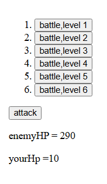
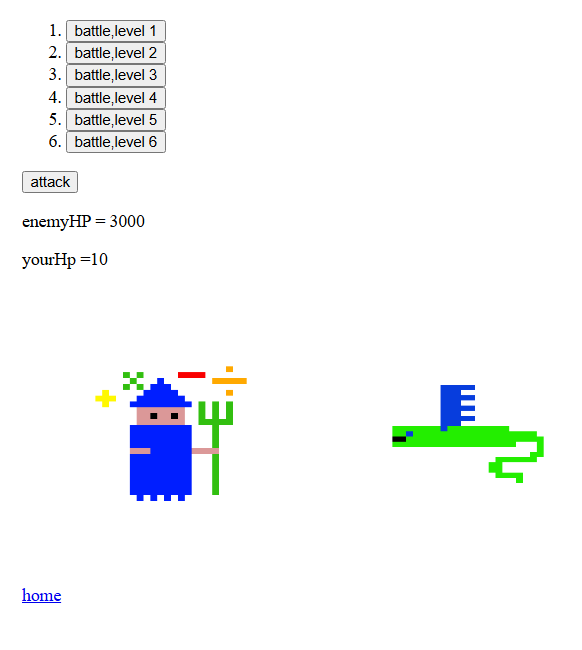
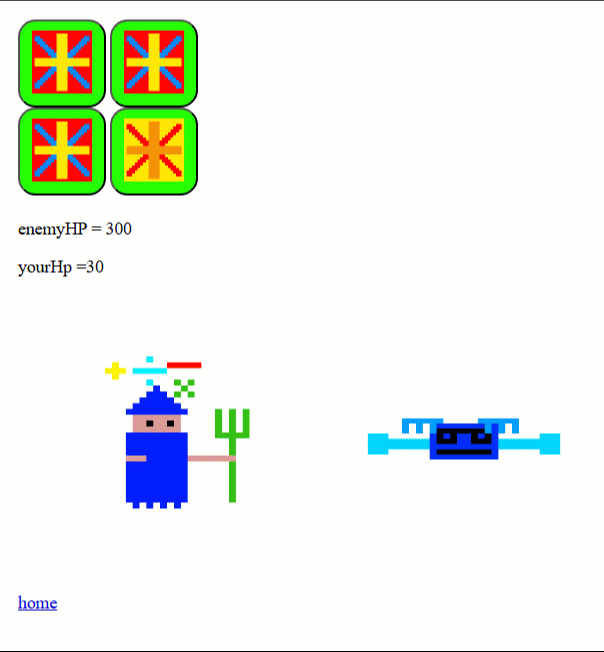
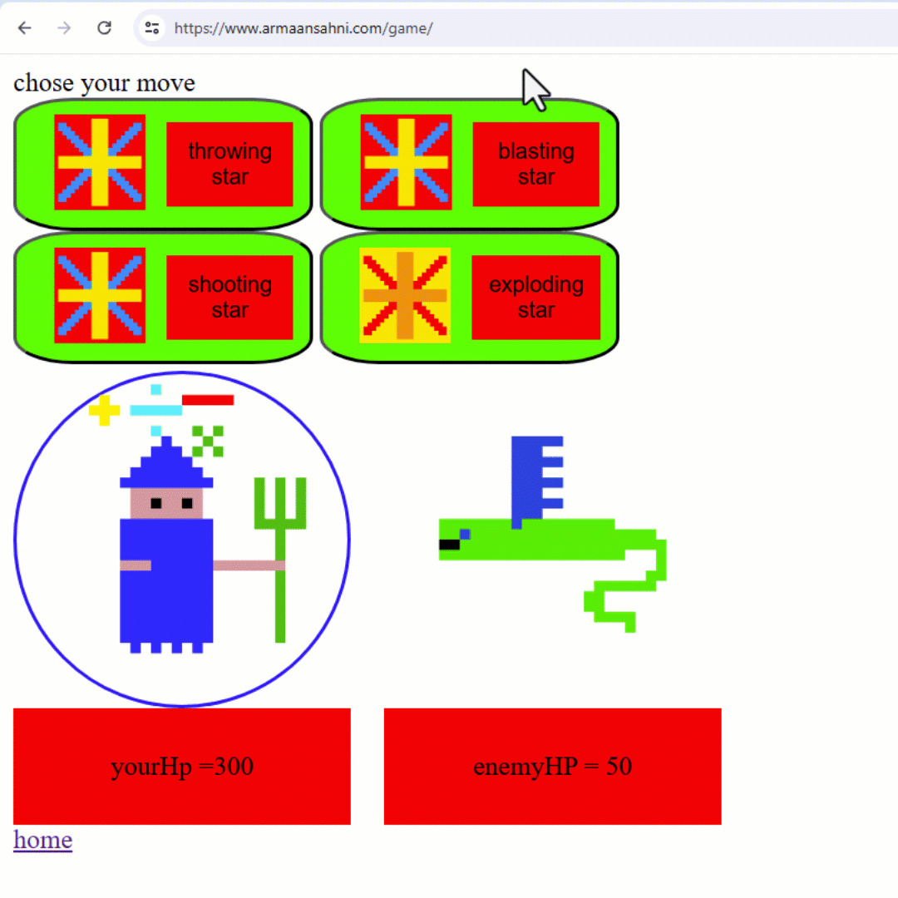

Hello, my name is Armaan and I'm 9 years old.
Today I want to show you how I wrote a game in JavaScript using AI called THE GAMEY GAME (please check out the game.)
I bet you are thinking that AI wrote the game for me, but I didn't just get AI to write a game for me. I used it to help find out about new codes like .appendChild and setTimeout(). This is why in my opinion AI is very helpful.
I already had an idea for the game, but I didn't know how to code a game in the browser. So I first started coding with the Godot game engine. But that was too complicated and used the language called GDscript that I did not know. So my Dad decided to teach me how to code independently. He did this by giving me coding tests. He had me make something and I had to make it using code, and I was able to research using AI and Google search. He also did not tell me in which language I could do these tests, so I would figure it out on my own.
I only knew three languages, HTML CSS and a little bit of JavaScript. So I chose to use JavaScript because the easiest way to do the things that my dad was giving me was functions, and there was no way to create functions in HTML and CSS. In JavaScript, though, there was.
Out of my two options for research, AI and Google search. I used AI because you can talk to AI like a person which to me was easier than looking at pre-written blogs on the internet.
When I asked AI about code it would give me an explanation, then I would give it my understanding and ask it if I was understanding right and if I wasn't it would give me another explanation.
Also, AI had the microphone tool which I could use to speak which was faster than typing.
But there was one downside to AI. AI was like a human which is why you could talk to it like a human. But because it was like a human, it could also be wrong like a human. So I had to make sure that it wasn't getting the answer wrong. For which I would sometimes use Google Search.
My idea for the game was that there would be some buttons to chose an enemy hp level. Then you would answer a math question and if you got it right, you would do 10 damage to the HP level you chose. But if you got it wrong, you would take 1 damage. The goal was to bring the HP level of the enemy to 0 before your HP level goes to 0.
There were 6 buttons. You selected one and it would set the enemy HP level. Then you clicked the attack button. It asked you a math question randomized from an array of eight math questions. If you got it right, you would remove 10 of the enemy`s HP. But if you got it wrong, then your HP level would go down by 10. If your HP level went to 0, then you lost but if the enemy HP level went to 0, you won.
Then I showed my game to a couple of people including Uncle Ryan. But Uncle Ryan said that my game needed graphics. So I decided that I would add graphics.

I added 2 img tags which each had a picture in it. One had a wizard, this was your character. He didn't do anything. It was just to represent your character. The next one was a boss. This image would vary depending on which button you clicked. Each boss had a different enemy HP level.
Now I had completed adding some graphics. But I realized that my game would be a lot cooler with backgrounds and animation.

I added animations to the images to show the character's attacking. When you got the question right, the wizard would raise his wizard's staff and then bring it down. And then the boss image would have its background turn red and then back to white. But when you got the question wrong, the boss would do something. And then the wizard image would have its background turn red and then back to white.
For my pictures I used the Piskel app. The Piskel app had Layers and Frames, which were what I used for animation. Layers are like one transparent slab in a stack of transparent slabs. You draw pictures on each one and they appear in front and behind of each other so all the layers are visible at the same time. For example, you would put a background as your last layer and the main objects and\or characters as the first layer. Frames are like a small time periods. Each frame has the same amount of layers. Each frame can represent as many seconds as you want. The frame will last for that amount of time and then switch to the next frame. For example if I was going to make an animation of a tree falling over, the first frame would be the tree standing straight. The last frame would be the tree completely sideways on the ground.

I collected a lot of feedback and refined my game. To refine something means to make it better by adding a few changes.
Then I wanted to make the attacks more easy to use, make it clear who's turn it was and put the HP below the character. So then I worked on those for a little bit.
By now I had turns, your turn and the boss's turn. I made the characters whose turn it was outline circle glow blue.
I also made the background adjust size if it was a phone so my game could be played on the phone.

While working on my game I learned JavaScript and a lot of CSS. I also got appreciation from getting feedback and comments of people playing my game.
Next in my game I will: